Getting started
- Download the latest
OmanAI-x.y.z.zipfrom GitHub Releases, unzip it and move OmanAI to your Applications folder. - Open it. OmanAI has no Dock icon and no window: it adds a small wave to your menu bar.
- Click the wave. The first time, the panel walks you through setup.
Setup
- Anthropic API key
- Paste a key from the Anthropic Console and press Save. OmanAI checks the key with Anthropic before storing it in your Mac's Keychain. If you would rather not use a key, choose Apple's on-device model instead.
- Accessibility
- Press Allow and turn OmanAI on in System Settings. This is what lets it read the text you selected and paste the result back.
- Screen Recording
- Only asked for the first time you turn on the Screen switch. You can use everything else without it.
Needs macOS 14 or later. Apple's on-device model needs macOS 26 or later with Apple Intelligence turned on.
The panel
Select some text in any app and click the wave, or press the shortcut you gave to Open OmanAI. The panel opens under the menu bar. With text selected it shows the screen below. With nothing selected it opens on Compose.
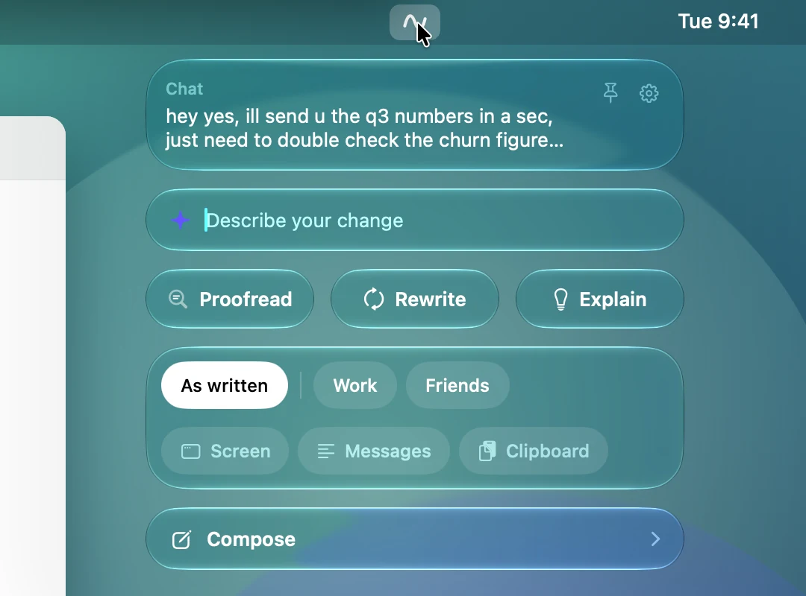
- Your text
- The top tile shows the app you are in and the first lines of what you selected, so you can see what OmanAI will work on.
- Pin top right
- Keeps the panel open as a small floating window. See Pinning the panel.
- Gear top right
- Opens Settings.
- Describe your change
- Type what you want, such as "shorter" or "warmer, and add a thank you", and press Return. It rewrites the text with that instruction, in the chosen style.
- Proofread
- Fixes spelling, grammar and punctuation and keeps your wording.
- Rewrite
- Rewrites the text in the chosen style.
- Explain
- Tells you how a reader will understand the text.
- Style chips
- As written and your own styles. One is always chosen. See Choosing a style.
- Screen, Messages, Clipboard
- Three switches that add context. See Context.
- Compose
- Opens the screen for writing something new.
Click anywhere outside the panel, or press Esc, to close it. Nothing appears in or near the field you are typing in, at any point.
Proofread, Rewrite, Explain
- Proofread
- Corrects mistakes and nothing else. Your words, line breaks and formatting stay, and so does chat shorthand such as u or thx. With As written, a message typed in lower case stays in lower case, and in text that mostly has its capitals a missed one is put right. With a style chosen, that style's habits decide instead: its capital letters, apostrophes and full stops. Proofread checks the text before it writes, so with Claude Haiku it takes about a second longer than a rewrite. It never uses context, and the rules you set in Settings don't apply to it.
- Rewrite
- Says the same thing better. With As written it keeps your own voice: your level of formality and your habits with capitals, punctuation and emoji. With a style it writes the way the messages in that style are written. It keeps names, numbers, dates and links exactly, and uses any context you switched on.
- Explain
- Reads your text as the person it is written for, and tells you what they will understand, how it will sound and what could be misread. It answers in the language of your text. An explanation is only for you: it has no Replace button and can't be pasted by mistake.
While OmanAI writes, the answer streams into the panel inside a glowing edge. Stop cancels it and takes you back.
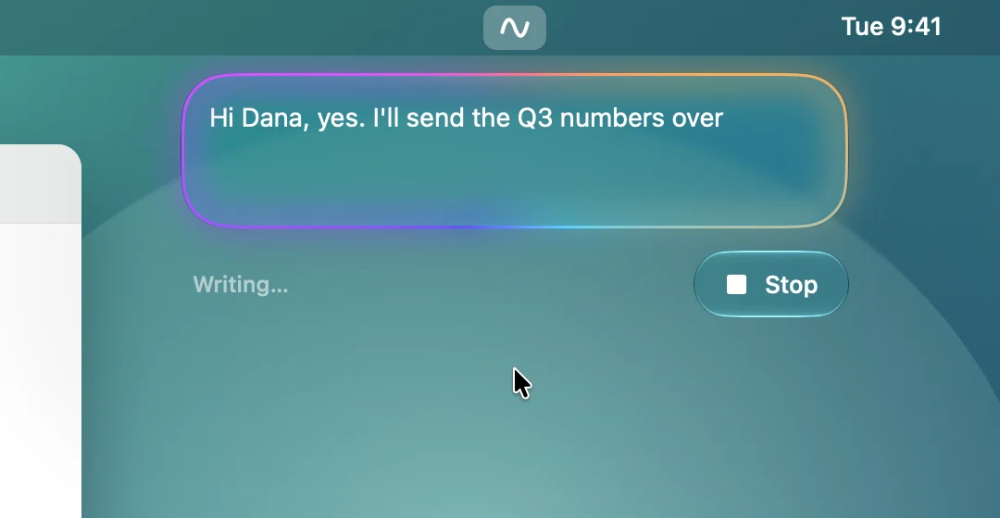
Choosing a style
The first row of chips decides whose voice the result is in. Choosing a chip starts nothing. It only sets what Proofread, Rewrite and Compose will use.
- As written
- No style. OmanAI keeps the voice of the text itself. This chip always stays first, to the left of a thin line.
- Your styles
- One chip for each style you made. With many styles the row scrolls sideways, and it opens scrolled to the one that is chosen.
- Create a style
- Shown while you have no styles. It opens Settings, where you teach your first one.
OmanAI remembers the style you last used in each app, so Slack can keep one style and Mail another. A style you used is chosen again the next time you open the panel in that app. You can turn this off, or set a default style, in Settings.
Context
A reply is better when the model knows what it is answering. The second row of chips are three switches. They can be on together, each is off again the next time the panel opens, and everything that is on is shown in the panel before it is sent.
- Screen
- Adds a picture of the window you are writing in. The picture appears in the panel so you can check it. Needs the Screen Recording permission, and is not available with Apple's on-device model, which takes text only.
- Messages
- Opens a box where you paste text for context, such as the thread you are answering. It is sent only while the switch is on.
- Clipboard
- Adds what you last copied, and shows all of it. The clipboard is read at the moment you turn the switch on, not before.
Context is used by Rewrite, Explain and Compose. Proofread never sends context. Text in the context is material for the model to read. If it contains instructions, they are not followed.
The result
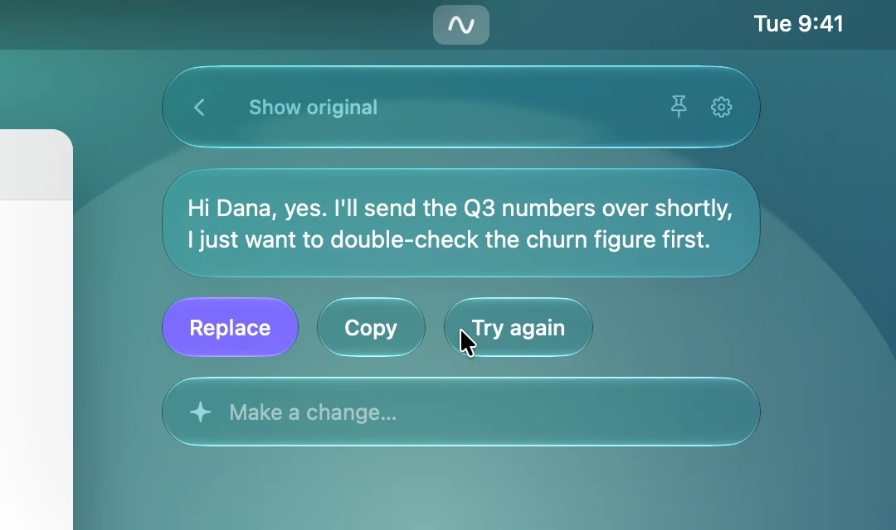
- Back ‹
- Returns to the screen you came from. Your selection is still there.
- Show original ⌘O
- Switches between the result and what you had selected, so you can compare. After Proofread the header shows the changes instead, as described below.
- Replace ⌘↩
- Puts the result where your selection was and closes the panel. ⌘Z in that app brings the original back. After Compose this button is Insert, and it puts the text at your cursor.
- Copy ⇧⌘C
- Copies the result and leaves the panel open.
- Try again ⌘R
- Asks for another wording of the same request.
- Make a change…
- Type an adjustment, such as "a bit shorter", and press Return. OmanAI changes the result it just gave you.
The shortcuts above work while a result is showing, and you can change them in Settings.
Nothing is pasted without a click. If your selection changed while OmanAI was writing, Replace pastes nothing and tells you. In a terminal it asks for a second press, because pasted text can run as a command.
After Proofread
Proofread marks what it changed. Your Mac works this out by comparing the two texts word by word, so nothing more is sent anywhere. In the header, where Show original would be, you find one of these, and ⌘O does the same as clicking it.
- 3 changes
- With At once in Settings, which is how OmanAI starts, each changed word is tinted in the result. Click the count to see the words they replaced, struck through just before them. Click it again to hide them.
- Show changes
- With When I ask, the result stays plain until you click it. Then the new words are tinted and the words they replaced are struck through. Hide changes takes the marks away.
- No changes
- Proofread found nothing to correct.
Replace and Copy always give the corrected text, never the struck-through words. A change of spacing alone is not marked. If a proofread changed more than half of the words, marks would cover everything, so the header offers Show original instead.
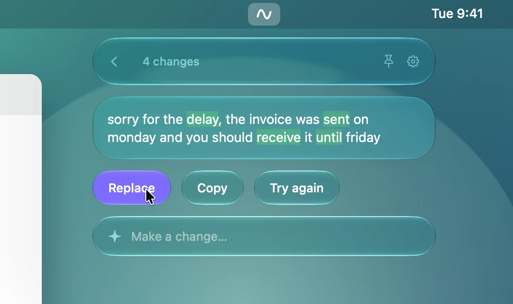
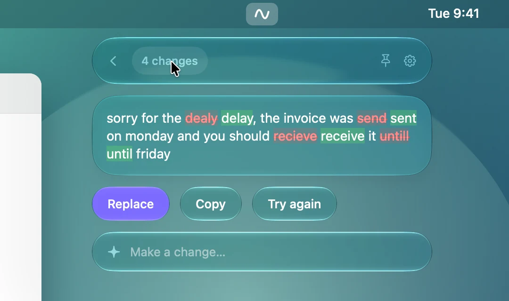
After Explain
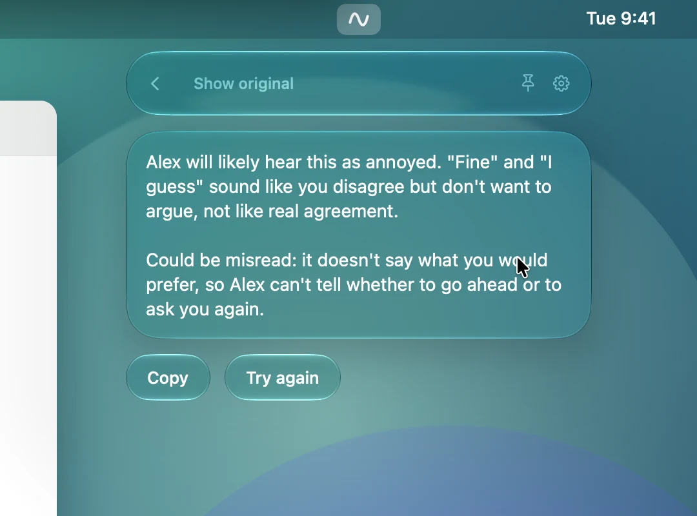
Compose
Compose writes something new from a short request. It opens when you click the wave with nothing selected, when you press Compose in the panel, or from its own shortcut.
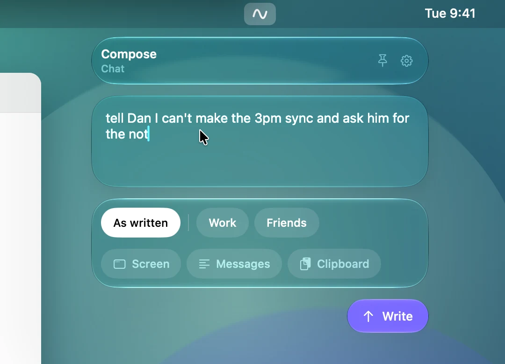
- What do you want to write?
- Describe the message in a line or two, for example "tell Dan I can't make the 3pm sync and ask him for the notes".
- Style and context
- The same chips as on the first screen. Add the conversation with Messages or Screen and the reply will fit it.
- Write
- Starts writing. The result screen then offers Insert, which puts the text at your cursor.
- Selected text
- If you opened Compose with text selected, that text is used as a reference, and the panel says so.
Pinning the panel
Press the pin and the panel stops closing when you click elsewhere. It becomes a small floating window that stays above your other windows.
- Drag it by any tile, or by the curved grip at its corner, and it stays where you drop it.
- Clicking the wave while it is pinned loads your current selection into it.
- After Replace or Insert it stays open and says Replaced or Inserted.
- Press the pin again to let it go.
To start every panel pinned, turn on Keep open when I click elsewhere in Settings.
Teaching a style
A style is a handful of messages you really wrote. OmanAI takes the voice from them: sentence length and rhythm, greetings and sign-offs, punctuation and capitals, emoji, and how formal you are. It never takes their content or facts.
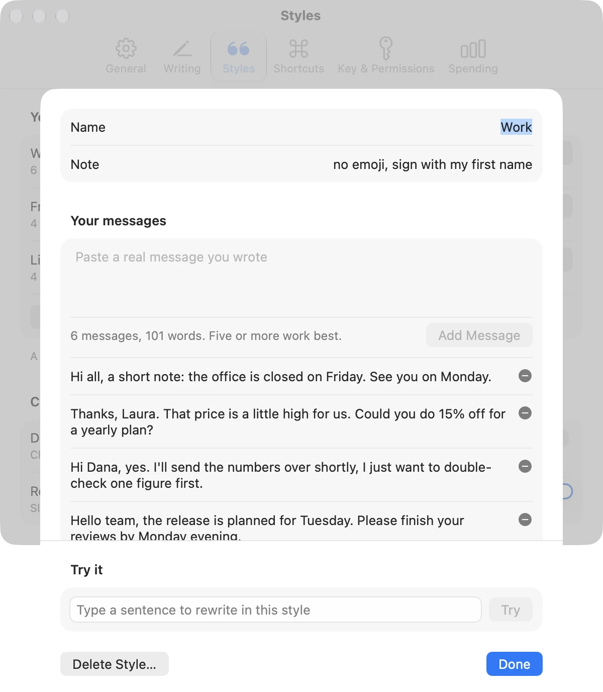
- Open Settings, go to Styles and press Add a Style…
- Give it a name you will recognise on a chip, such as Work or Friends.
- Paste a real message you wrote into the box and press Add Message. Repeat. Five or more work best.
- Type a sentence under Try it and press Try to hear the style.
- Name
- What the chip in the panel says.
- Note
- An extra instruction for this style only, such as "no emoji with clients" or "sign with my first name".
- Your messages
- The newest is at the top. The minus button removes one. The line under the box counts messages and words.
- Try it
- Rewrites a sentence in this style with the model chosen in Settings. With Claude this is a normal request and counts toward Spending.
- Delete Style…
- Asks first. The style's messages and its shortcut go with it, and it can't be undone.
- Done
- Closes the editor. Every change was already saved as you made it.
Use messages of one kind in one style. Slack messages in one, emails in another. Mixed samples give a mixed voice.
Settings
Open Settings with the gear in the panel. It has six pages.
General
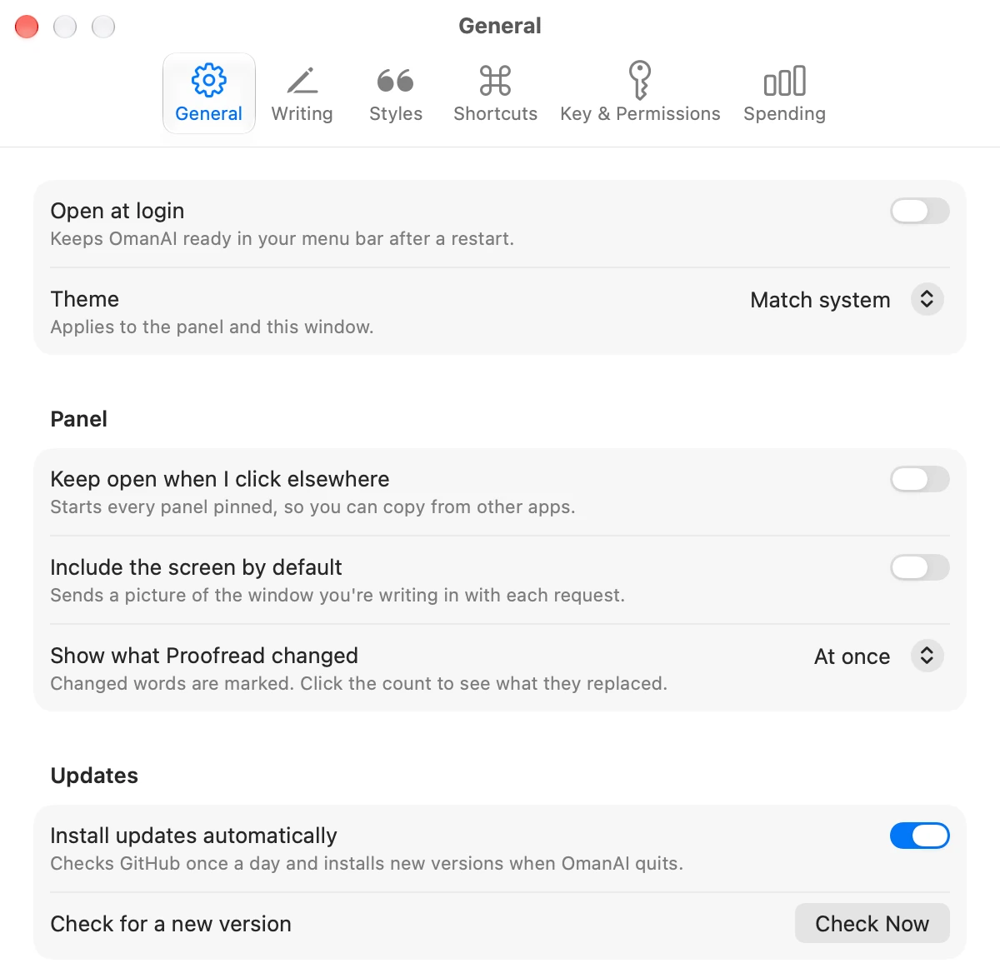
- Open at login
- Starts OmanAI when you log in, so the wave is always in your menu bar.
- Theme
- Match system, Light or Dark, for Settings and the panel. With Match system the panel is dark glass, like Control Center.
- Keep open when I click elsewhere
- Starts every panel pinned.
- Include the screen by default
- Turns the Screen switch on each time the panel opens.
- Show what Proofread changed
- At once marks the changed words as soon as the result appears. When I ask keeps the result plain until you click Show changes. See The result.
- Install updates automatically
- Checks GitHub once a day and installs a new version when OmanAI quits.
- Check Now
- Looks for a new version right away.
- View on GitHub
- Opens the source code. The line beside it shows the version you have.
- Quit
- Quits OmanAI. The wave leaves the menu bar until you open the app again.
Writing
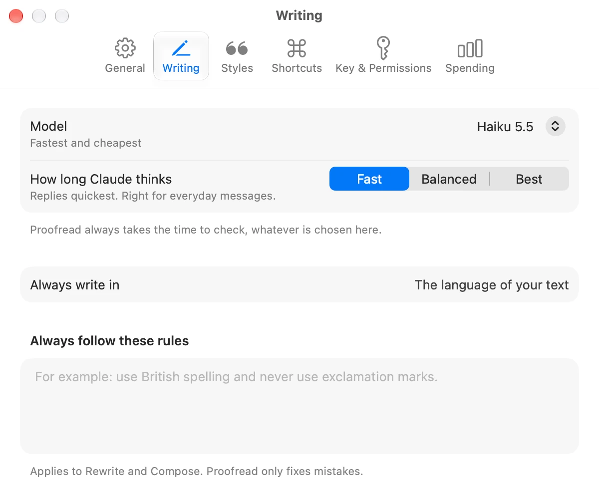
- Model
- Claude Haiku, Sonnet or Opus, or Apple's on-device model. See Models. A model that can't be used on this Mac says why.
- How long Claude thinks
- Fast, Balanced or Best. Fast suits everyday messages. Best thinks hardest, is slower and costs a little more. Proofread always takes the time to check, whatever is chosen here.
- Always write in
- A language for every result. Leave it empty to keep the language of your text.
- Always follow these rules
- Standing instructions, such as "use British spelling and never use exclamation marks". They apply to Rewrite and Compose. Proofread only fixes mistakes.
Styles
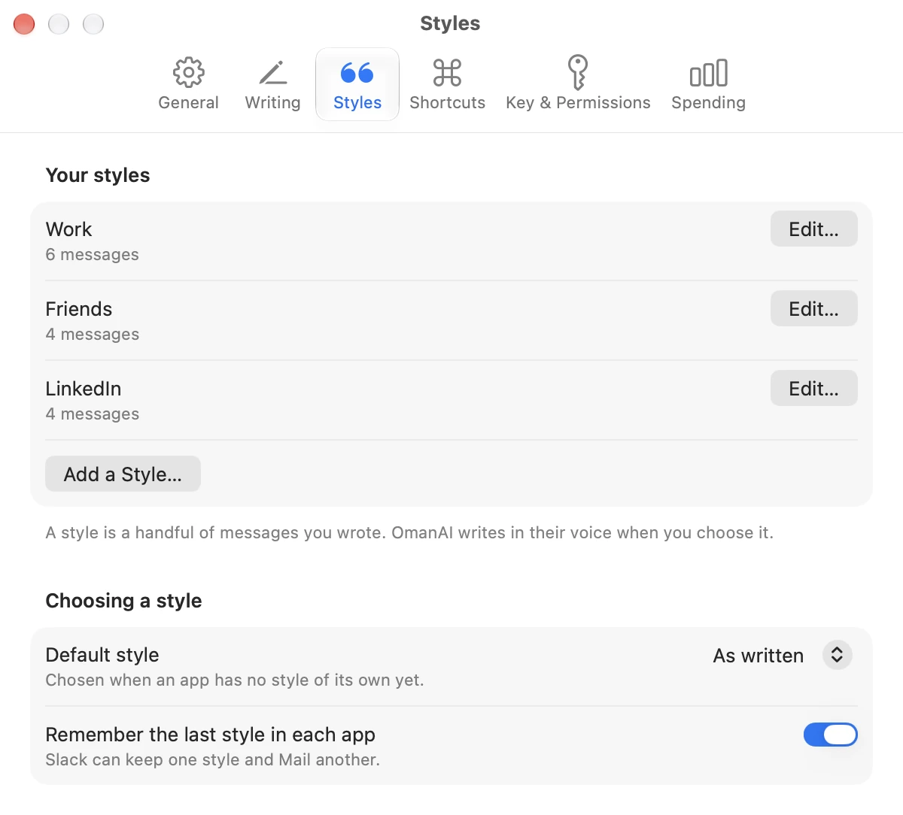
- Edit…
- Opens a style in the editor.
- Add a Style…
- Makes a new style and opens it.
- Default style
- The chip that is chosen when an app has no style of its own yet. It can be As written.
- Remember the last style in each app
- On by default. Turn it off and every panel starts on the default style.
Shortcuts
See Shortcuts below.
Key & Permissions
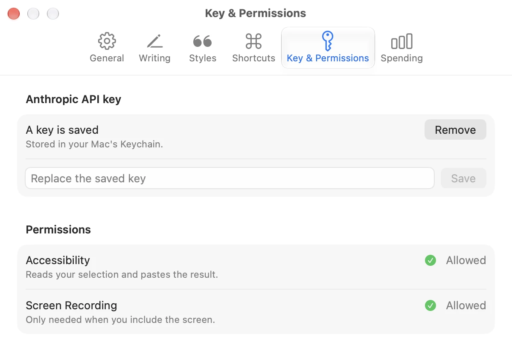
- API key
- Paste a key and press Save. It is checked with Anthropic first and then stored in the Keychain. It is never shown again.
- Remove
- Deletes the saved key from the Keychain.
- Accessibility
- Shows Allowed, or an Allow… button that takes you to the switch in System Settings.
- Screen Recording
- The same, for the Screen switch.
Spending
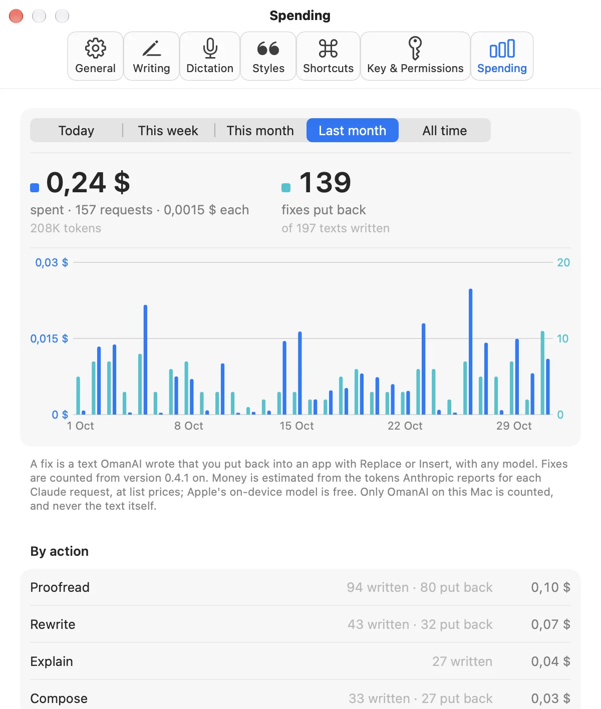
- Period
- Today, This week, This month, Last month or All time. It sets everything below it.
- Spent
- What Claude cost in that period, with the number of requests, the average cost of a request and the tokens sent and received.
- Fixes put back
- How many texts OmanAI wrote that you put back into an app with Replace or Insert, with any model, and how many it wrote in all.
- Chart
- A pair of bars for each hour of today, each day of a week or month, or each month of all time: fixes put back, with their scale on the right, and money spent, with its scale on the left.
- Pointing at a pair
- Shows what is behind it: the fixes and the texts written, by action, then what was spent, by model, with the requests and tokens.
- By action
- Proofread, Rewrite, Explain and Compose: how many texts each wrote, how many were put back, and what they cost. A change asked for, or Try again, counts as the action it changes.
- By app
- The apps you wrote for, most fixes first.
- By model
- What Claude cost, split by model, most expensive first.
The money is an estimate: the tokens Anthropic reports for each request, at list prices built into the app. Only what OmanAI does on this Mac is counted, Apple's on-device model is free, and your Anthropic invoice is what you actually pay. Fixes are counted from version 0.4.1 on. Only what kind of text, the model, the app and whether it was put back are kept, never the text itself.
Shortcuts
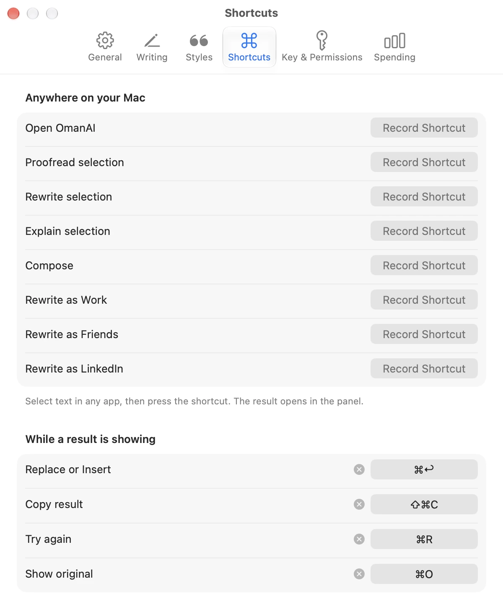
Every action can have a shortcut that works anywhere on your Mac. None is set when you install OmanAI, so it never takes a combination another app is using.
| Action | What it does |
|---|---|
| Open OmanAI | Opens the panel, as a click on the wave does. |
| Proofread selection | Proofreads the selected text at once and shows the result, or puts it straight back with Quick fix. |
| Rewrite selection | Rewrites the selected text at once, in the style chosen for that app. |
| Explain selection | Explains the selected text at once. |
| Compose | Opens the panel on Compose. |
| Rewrite as … | One for each of your styles: rewrites the selection in that style at once. |
Quick fix, the switch under Proofread selection, makes that shortcut put the corrections straight back over your selection instead of opening the panel. The wave in the menu bar rocks while it works and shows a check mark when it is done, and ⌘Z in the app brings back what you wrote. Nothing is pasted if there was nothing to correct, if your selection changed or you moved to another app meanwhile, or if the proofread changed most of your words. The menu bar then shows an exclamation mark. Click the check mark or the exclamation mark, or right-click the wave and choose Show Last Quick Fix, to see in the panel what it changed.
Four more work while a result is showing: ⌘↩ Replace or Insert, ⇧⌘C Copy, ⌘R Try again and ⌘O Show original, which shows the changes after Proofread.
- Record Shortcut
- Click it and press the keys. Esc cancels. A shortcut needs a modifier such as ⌘, ⌥ or ⌃, unless it is a function key.
- The × button
- Removes a shortcut.
- A warning under a row
- Another app already uses that combination, so macOS did not give it to OmanAI. Choose a different one.
⌘C and ⌘V can't be shortcuts, because OmanAI uses them to copy and paste. If you give an action a combination another action had, it moves.
Models
You choose the model on the Writing page of Settings. These are averages over 11 short writing tasks at the Fast setting, run through the app itself on 12 November 2026. Your numbers will vary with the length of the text and your connection.
| Model | First word | Whole answer | A message costs | Best for |
|---|---|---|---|---|
| Claude Haiku | 0.6 s | 1.0 s | about $0.0001 | Everyday messages. Start here. |
| Claude Sonnet | 0.7 s | 1.4 s | about $0.0015 | Wording that matters more. |
| Claude Opus | 1.1 s | 1.8 s | about $0.004 | The few messages you really care about. |
| Apple, on device | 0.8 s | 1 to 2.5 s | Free | Plain proofreading, offline and private. |
Proofread is the exception. It checks the text before it writes, so with Claude Haiku a short message takes about 1.7 seconds and costs about $0.0002.
Claude
Claude needs your own Anthropic API key, and Anthropic bills you for what you use. In our tests all three Claude models matched a style, followed instructions such as "polite but still firm", and handled languages other than English.
Apple's on-device model
It runs on your Mac, needs no key and costs nothing. In the same tests it proofread plain English well, but it often ignored a style when rewriting, and it does not handle languages Apple Intelligence doesn't support. It takes text only, so the Screen switch is off, and only the first few thousand characters of a style's messages fit. The first request after a pause takes several seconds while the model loads.
Privacy and data
- On your Mac
- Styles, settings and the spending log are in
~/Library/Application Support/oman/writing.sqlite. The spending log keeps each request's date, model and token counts, never its text. Your API key is in the Keychain. - Sent to Anthropic
- With a Claude model, each request sends the text you selected or asked for, the messages of the chosen style, and the context you switched on. It goes straight from your Mac to Anthropic with your key. There is no server of ours in between.
- Never sent
- With Apple's on-device model, nothing leaves your Mac. OmanAI has no analytics and no account. Apart from your requests, it only contacts GitHub to check for updates.
Troubleshooting
- The panel opens on Compose although I selected text
- OmanAI could not read the selection. Check that Accessibility is allowed in Settings, under Key & Permissions. In terminals, remote desktops and virtual machines OmanAI does not press ⌘C for you, because there it can do more than copy, so a selection is read only where the app exposes it.
- A whole line shows up as my selection
- Some editors, VS Code among them, copy the current line when nothing is selected. Select the text first.
- Replace asks me to press again
- In a terminal this is on purpose, because pasted text can run as a command. Elsewhere it happens when the field you were typing in looks different from when the panel opened. Press again, or use Copy.
- Replace says my selection changed
- The selected text was different when the result was ready, so nothing was pasted. Use Copy, or select the text again and try once more.
- The Screen picture shows the wrong thing
- A large popup in front of your window, such as an emoji picker, can be what gets captured. The panel shows the whole picture before it is sent, so check it.
- A shortcut does nothing
- Another app may own that combination. The Shortcuts page shows a warning under the row when macOS refused it.
- The on-device model is not available
- It needs macOS 26 or later on a Mac that supports Apple Intelligence, with Apple Intelligence turned on in System Settings. Right after turning it on, the model can take a while to download.
- Accessibility is on but OmanAI says it isn't
- macOS ties the permission to the exact copy of the app. Use the copy in your Applications folder, and if you replaced the app by hand, turn the switch off and on again in System Settings.
More details, and the edges we know about, are in the list of known issues. If something else is wrong, open an issue.
Updating and removing
OmanAI checks GitHub once a day and installs a new version when you quit it. If it stays open for a week, it offers to install. Every update is signed, and the app checks the signature before unpacking it. To update right now, press Check Now on the General page.
To remove OmanAI:
- In Settings, under Key & Permissions, press Remove to delete your API key from the Keychain.
- Quit OmanAI from the General page, and move it from Applications to the Trash.
- To delete your styles and settings too, remove the folder
~/Library/Application Support/oman.